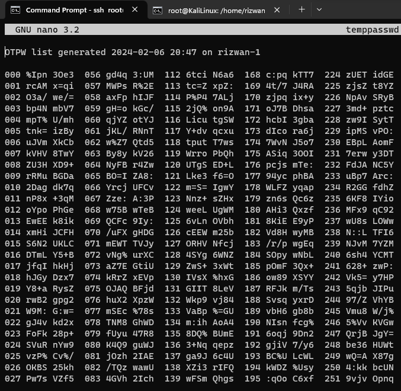
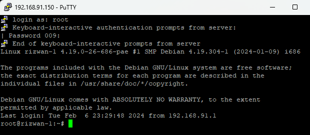

Konfigurasi
Debian 10- Router
Interfaces
ens33 NAT : 192.168.91.0/24
ens36 LAN : 11.1.25.254/24
Package
- net-tools
- iptables-persistent
- netfilter-persistent
- proftpd
- vsftpd
- snort
- otwp (new)
OTPW adalah sistem kata sandi satu kali yang kuat terhadap pencurian daftar kata sandi dan berpacu dengan serangan digit terakhir. Paket ini berisi program yang digunakan untuk mengatur OTPW bagi pengguna dan menghasilkan daftar kata sandi.
Install dua software sekaligus
apt-get install otpw-bin libpam-otpw
Buka file konfigurasi sshd menggunakan editor
nano /etc/pam.d/sshd beri tanda # pada @include common-auth sehingga menjadi: # Standard Un*x authentication #@include common-auth Pada baris akhir tambahkan : auth required pam_otpw.so session optional pam_otpw.so
Buka file sshd_config menggunakan nano
nano /etc/ssh/sshd_config
pastikan parameter dibwah ini tetap digunakan (tidak ada tanda # sesuai dengan parameter dibawah) :
PubkeyAuthentication yes
PasswordAuthentication no
ChallengeResponseAuthentication yes
UsePAM yes
Restart service SSH agar bisa berjalan dengan baik dan benar
/etc/init.d/ssh restart
Pada direktori root Pastikan berada pada root@rizwan1:~#
Lalu generate password otomatis dan masukan password key
otpw-gen > temppasswd.txt Enter new prefix password: admin Reenter prefix password: admin
Buka file temppasswd.txt (sebagai acuan referensi password password)
nano temppasswd.txt

Lalu jika ingin login ssh menuju Debian 10- Router maka akan ada tampilan yang mengharuskan kita memasukan kode OTP tersebut
Terlihat disana kita memerlukan kode OTP bernomor 009 maka kita lihat di Virtual Machine Debian 10- Router tadi untuk copy/melihat kode OTP tersebut.
password : admin kode OTP : rRMu BGDa maka jika ingin login ssh : adminrRMuBGDa